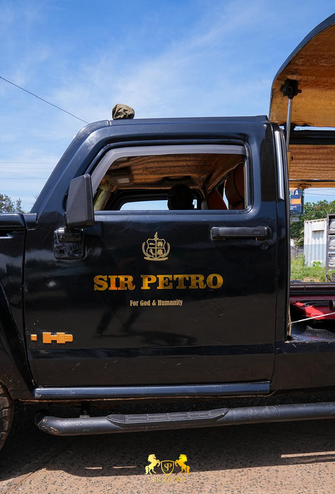
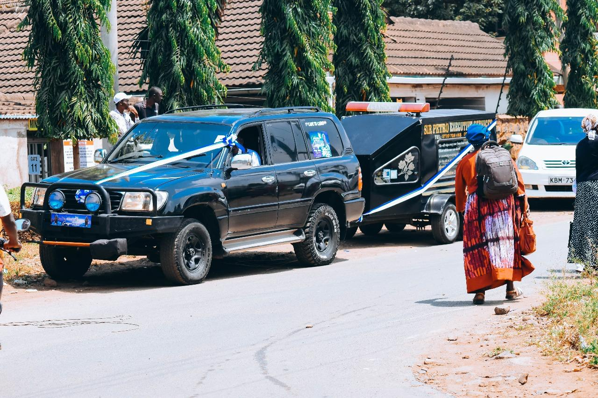
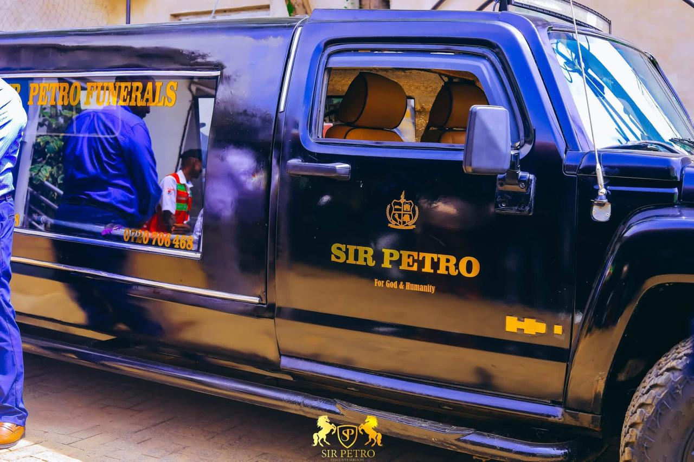

Sir Petro Executive Funeral Services is committed to providing compassionate, professional and dignified funeral services throughout Kenya.
We specialize in executive hearse transportation, burial coordination, lowering gear services, funeral planning and complete funeral management.
Premium hearse transportation.
Nationwide transportation services.
Professional burial equipment.
Complete funeral event setup.
Funeral documentation services.
Complete funeral coordination.
"Sir Petro provided exceptional service during a difficult time. Their professionalism and compassion were evident throughout the process."
"The attention to detail and respect shown for our loved one was truly appreciated. Highly recommended!"
Transparent and competitive pricing for all our services with respect to the level of quality and professionalism, ditance covered and number of days spent.



Phone: 0720 706 468
Location: Kisumu,Besides jaramogi Oginga Oginga Teaching and Referal Hospital, Kenya
Availability: 24 Hours